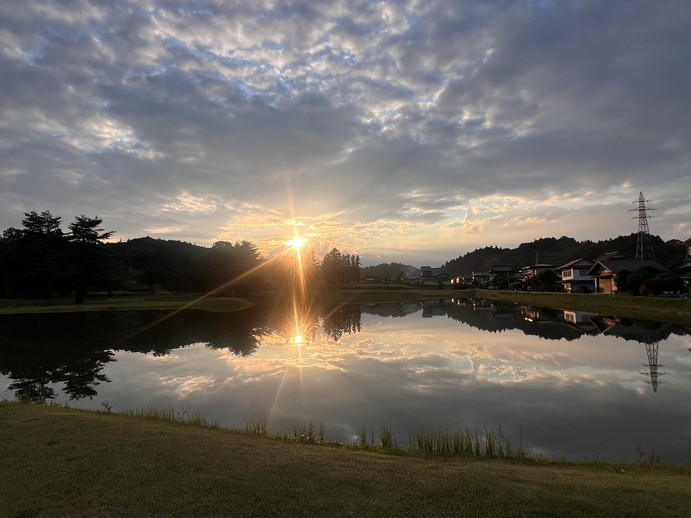
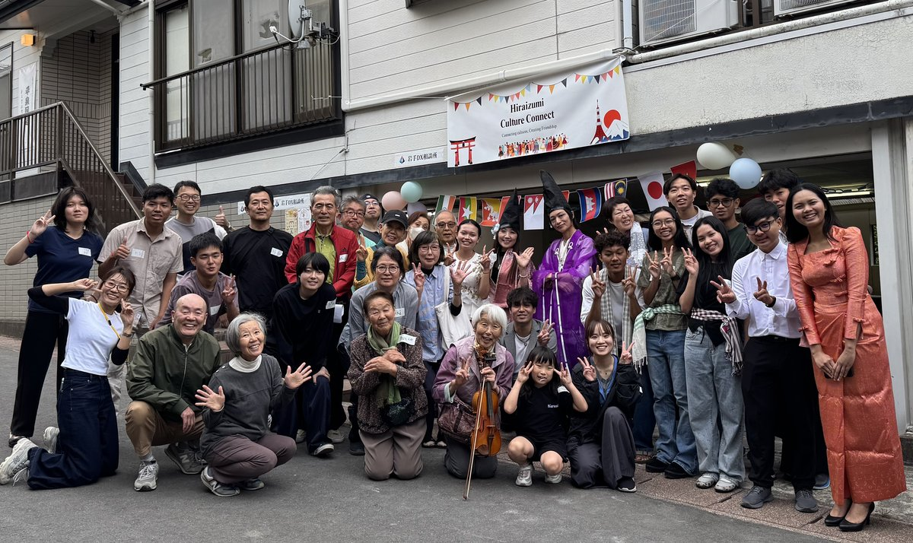
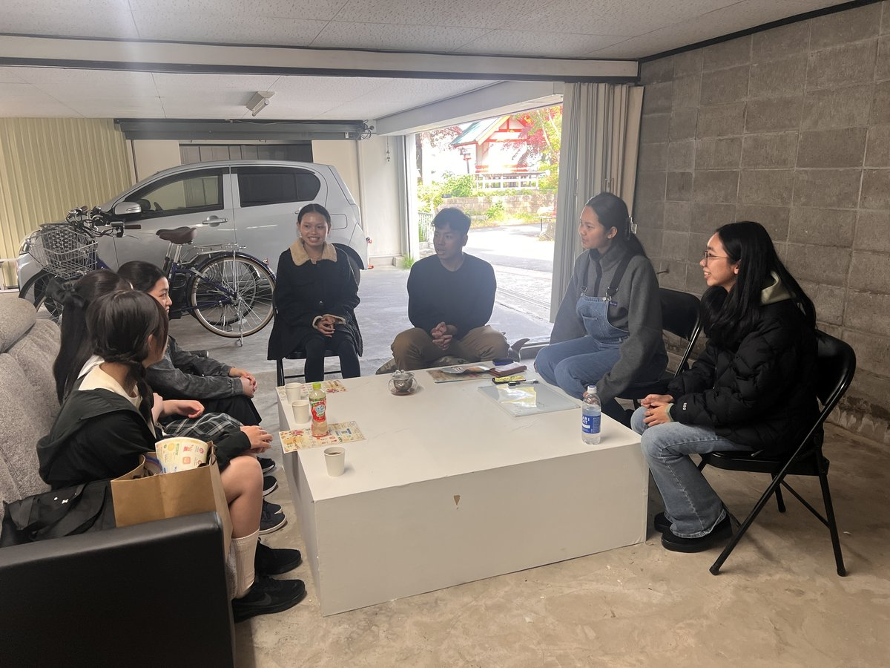
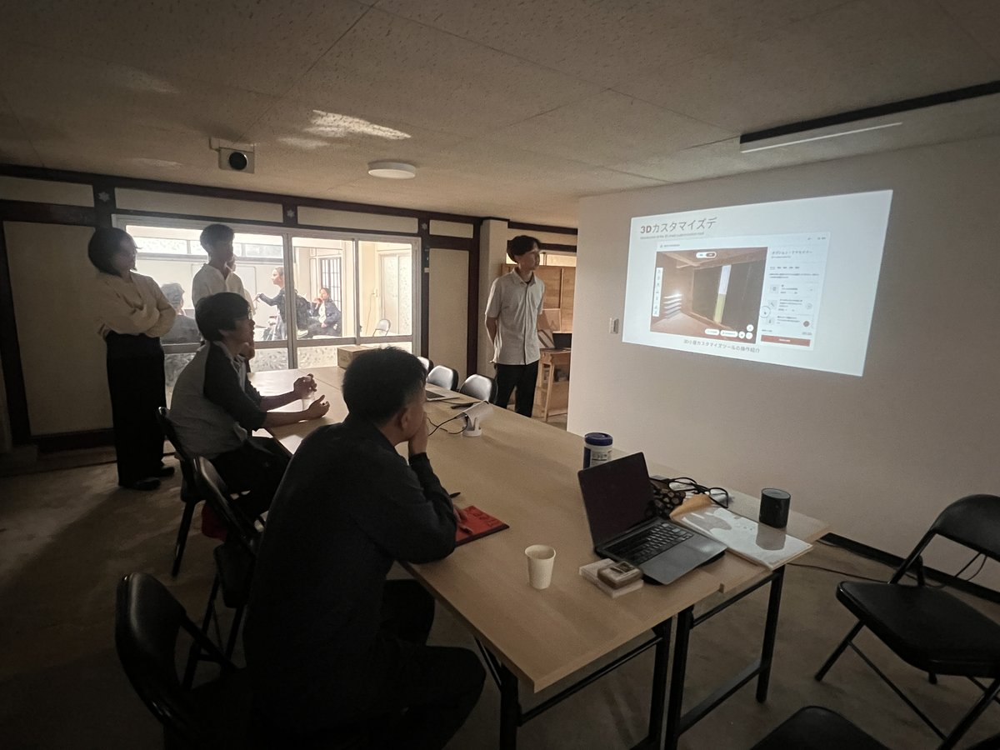
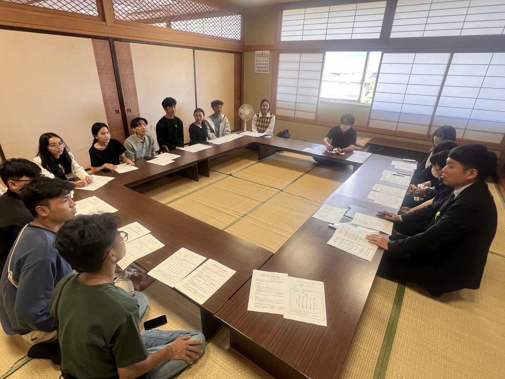
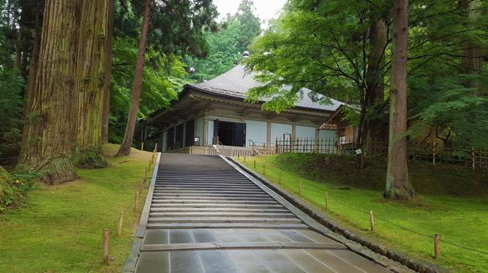
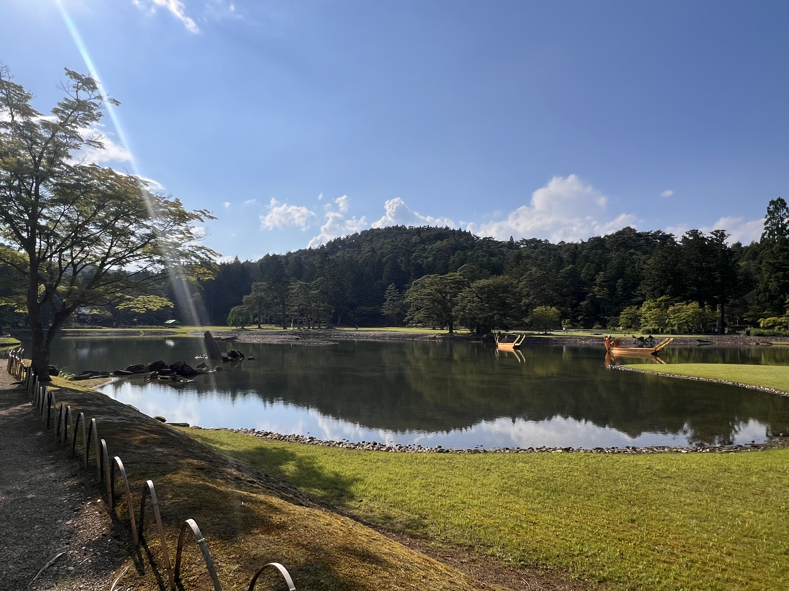
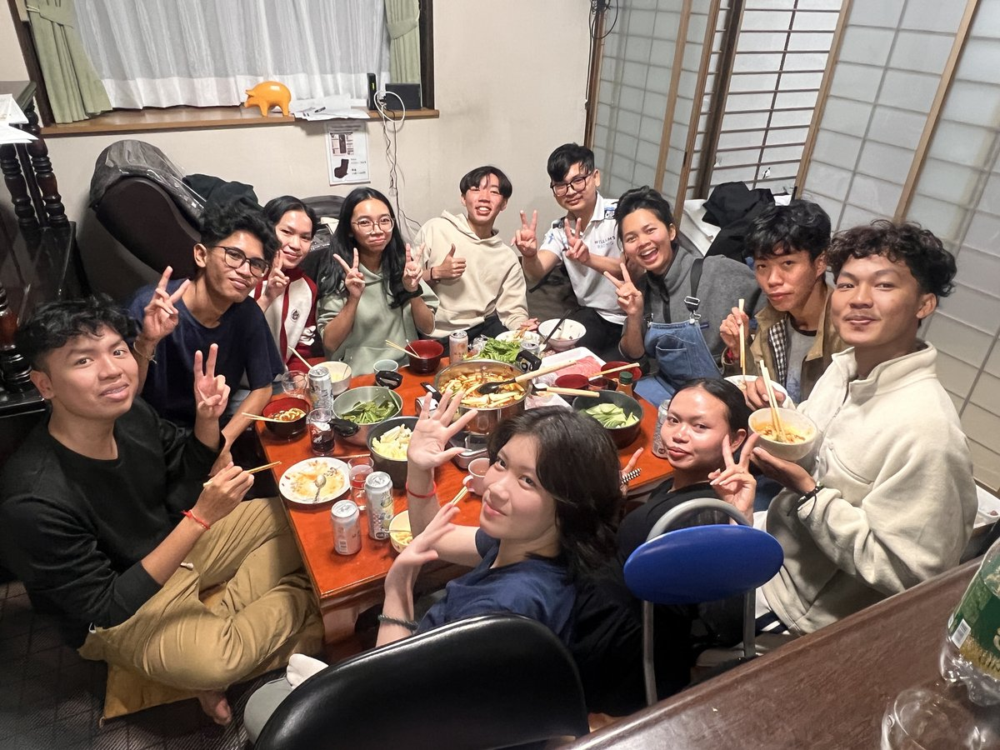

A selective, small-scale immersive program in Hiraizumi — a UNESCO World Heritage town in northern Japan. Learn through real DX projects that solve challenges faced by local businesses and government, while living in a community that few international students ever experience.

This is a 1-month learning-based stay program designed for international participants who want to gain real experience in Japan. The core of the program is project-based learning: you will work on DX (Digital Transformation) projects that address real challenges faced by local businesses and municipal government in Hiraizumi.
Rather than studying in a major city like Tokyo, participants live and learn in Hiraizumi — a quiet, historic town in northern Japan. This condensed format offers intensive learning, sustained focus, and genuine cultural immersion in a short timeframe. The program is selective and small-scale, prioritizing learning quality and personal support.
The program is structured in four weeks, each building on the last. The exact content is adapted based on each participant's background, interests, and goals.
Settle In, Learn Local Context
Arrive in Hiraizumi and begin settling into daily life. Start practical Japanese language study, learn local customs, and build relationships with community members. Get introduced to the local businesses and government organizations you will work with during your stay.

Begin Real DX Project
Start working on DX projects addressing real challenges of local businesses and municipal government. Apply technology — including AI tools — to practical problems. Collaborate with team members and local stakeholders on the ground.

Build & Refine Solutions
Continue developing your DX project with guidance from mentors. Apply what you are learning through hands-on work. Deepen your Japanese through daily project collaboration and community interaction. Test and refine your solutions based on feedback.

Present & Plan Next Steps
Finalize your DX project and present your outcomes to local stakeholders. Reflect on your learning and growth. Build a portfolio of real project work. Prepare for your next steps — whether that is further study, work in Japan, or returning home with new skills and perspective.

Hiraizumi is a UNESCO World Heritage town with a rich cultural history stretching back nearly a thousand years. Located in Iwate Prefecture in northern Japan, it offers an environment that is rare for international programs — one where learning happens naturally through daily life.


Fewer distractions and a slower pace create the ideal conditions for deep focus and genuine learning.
In a small town, relationships form naturally. You will interact with local residents as part of daily life.
Experience Japan as it is actually lived — not the curated version found in tourist areas or big cities.
If this program resonates with your goals, we would like to hear from you. Fill the inquiry form and we will guide you through the next steps.
Inquire NowI have experience in international education and cross-border educational programs between Japan and Asia. I have worked on initiatives supporting international students and designing learning-based programs in Japan. I design and manage this program on a small scale to ensure quality, responsibility, and personal attention to each participant.
After completing his graduate studies at the University of Tokyo, Hirofumi worked at Hitachi Group for over a decade, including an assignment in Silicon Valley, California. He has extensive experience working with highly skilled international talent across the globe. He currently leads Wald Inc., providing DX solutions with Southeast Asian professionals, and serves as Vice Director of the Hiraizumi Economic Revitalization Institute. He also lectures at multiple universities on topics including global talent, business strategy, and regional development.
Chanreaksmey graduated from Asia Institute of Innovation with a degree in Tourism Management and currently works at a Japanese company. As a graduate who successfully transitioned into the Japanese workforce, she brings firsthand understanding of the challenges and opportunities that international participants face. Her experience bridges the gap between academic learning and professional life in Japan.
We keep the application process straightforward and personal. There is no complex online form — we start with a conversation.
Send us an email expressing your interest.
We will arrange an initial conversation.
Complete a short application form.
Receive detailed guidance on next steps.
In 2025, eight students from Cambodia joined the program as our first cohort. Here is what they experienced.

"Living in Hiraizumi was completely different from what I expected of Japan. There were no crowds, no noise — just real life. I learned more Japanese in one month here than I did in a year of textbook study."
— Sopheakvethya Syna, Cambodia, 2025 cohort
"The DX project gave me real experience I can show to employers. I worked with a local business to improve their online presence, and now I have something concrete in my portfolio."
— Vannputhika Suon, Cambodia, 2025 cohort
"I was nervous about living in a small town, but the local people were so welcoming. I became a regular at the local shops, and by the end I felt like part of the community."
— Ros Mengheang, Cambodia, 2025 cohort
"This program helped me understand what working in Japan is really like. The daily routines, the teamwork, the attention to detail — these are things you cannot learn from a classroom."
— Mao Roma, Cambodia, 2025 cohort
"The best part was the small group. Everyone knew each other, and the organizers gave us personal attention. It did not feel like a mass program — it felt like a real opportunity designed for us."
— Oeng Chihea, Cambodia, 2025 cohort
"Hiraizumi is a place full of history, and living here made me appreciate Japanese culture in a way I never could from a textbook. Every day felt like a new discovery."
— Sos Sokleng, Cambodia, 2025 cohort
"I came to learn about technology, but I also learned about myself. Working on real projects with local people gave me confidence that I can contribute anywhere."
— Dorn Kanika, Cambodia, 2025 cohort
"Before this program, I only knew Japan from anime and news. Now I know what it is like to live here, work here, and be part of a community. That changed my career plans completely."
— Hour Seth Thavareak, Cambodia, 2025 cohort
First cohort: 8 students from Cambodia (2025) — All participants completed the full program.
No prior Japanese is required, although basic knowledge is helpful. The program includes practical Japanese study, and you will develop your skills through daily life and structured learning activities.
Visa requirements depend on your nationality and circumstances. Once you are accepted, we will provide guidance on the appropriate visa type and application process for a 1-month stay in Japan.
This program is not affiliated with a specific university, but we can provide documentation of your participation and learning outcomes. Many universities accept such documentation for credit transfer — please consult your academic advisor.
The program is intentionally small-scale. Exact cohort sizes may vary, but we keep groups small to ensure quality interaction, personal support, and meaningful community engagement.
Accommodation is arranged locally in Hiraizumi. The type may vary depending on availability and the program track, but all options are comfortable and suitable for a 1-month stay. Details will be shared upon acceptance.
Yes. The program is designed to accommodate participants with different backgrounds and levels of experience. The content can be adapted to suit individual learning goals, whether academic, professional, or personal.
Participants leave with practical skills, cultural understanding, and documented experience that can support future career or academic plans in Japan. We also remain available for guidance and references as you take your next steps.
If this program resonates with your goals, we would like to hear from you.
Apply/Inquiry Now